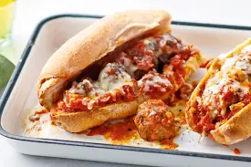

Classic Meatball Sandwiches

Ingredients:
- Precooked meatballs
- 1/2 lb ground sausage
- 1/2 onion chopped
- 1 small bell pepper chopped
- 1 can tomato sauce (8 ounces)
- 1 cup water
- 1 teaspoon salt
- 1 teaspoon parsley
- 1 teaspoon garlic salt
- Hotdog buns (or whatever bread you would like
Description:
- Heat medium pan on medium, mix sausage, chopped onions, and chopped bell pepper until sausage is thoroughly
cooked.
- Turn heat to a simmer, add the rest of the ingredients while stirring. (Add as many meatballs as you
feel
necessary to mix well with the sauce).
- Slowly stir until meatballs are fully warmed.
- Scoop 3-4 meatballs in between the two buns and enjoy. Optional: Add slices of cheese.